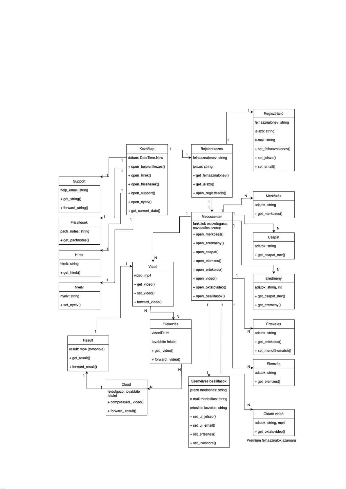
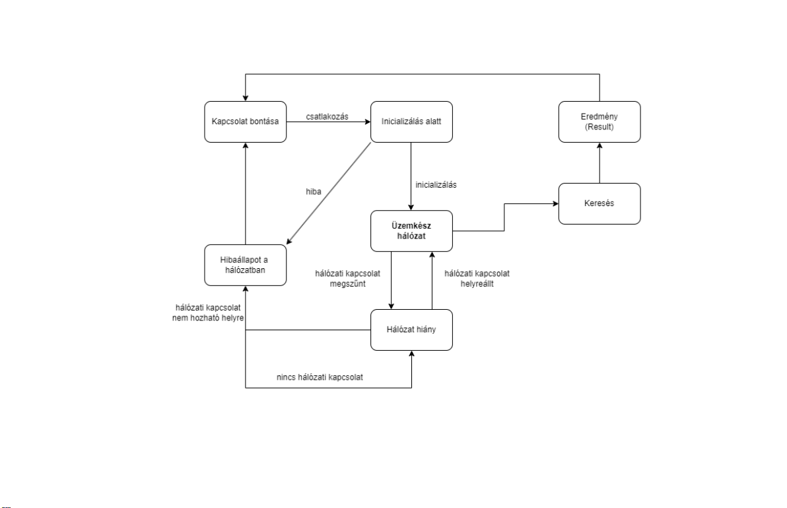

Ebben a részben a H3-ban bemutatott kezdetleges ábrából kiindulva alkottam meg az osztálydiagramot és az alrendszereket. Ezeket finomítottam és dolgoztam ki részletesebben. Leírtam a kapcsolatok részletes tulajdonságait, azonosítottam az attribútumokat és egyesével minden osztálynak elkészítettem a táblázatát, amiben a róla szereplő adatok találhatóak.
A menü alrendszer segítségével a felhasználó könnyedén navigálni tud az alkalmazás különböző osztályai között
A Grafikai alrendszer a GUI működtetéséért felelős ez működteti, futtatja a felhasználói felületet, ezen keresztül kommunikál a felhasználó az alkalmazással.
| Név | Típus | Leírás |
|---|---|---|
| Felhasználó | - | Használja és kezeli a programot. |
| Név | Típus | Leírás |
|---|---|---|
| metódusok | - | - |
| Név | Típus | Leírás |
|---|---|---|
| loadKepernyo | - | applikáció képernyőjének a betöltése |
| Név | Típus | Leírás / Működés |
|---|---|---|
| open_bejelentkezes | - | Bejelentkezés manager megnyitása |
| get_current_date | - | Aktuális dátum lekérése |
| open_hirek | - | Hírek megnyitása |
| open_frissitesek | - | Frissítések megnyitása |
| open_support | - | Segítség felület megnyitása |
| open_nyelv | - | Nyelvválasztás megnyitása |
| Név | Típus | Leírás / Működés |
|---|---|---|
| help_email | string | Segítséget nyújtó email cím |
| get_string | string | A segítséget kérő üzenet megtekintése |
| foward_string | string | Üzenet továbbítása |
| Név | Típus | Leírás / Működés |
|---|---|---|
| patch_notes | string | Frissítések, módosítások közlése |
| get_patchnotes | - | Patchnotes-ok megtekintése |
| Név | Típus | Leírás / Működés |
|---|---|---|
| hirek | string | Hírek megtekintése |
| Név | Típus | Leírás / Működés |
|---|---|---|
| nyelv | string | Különböző nyelvek és fordítások |
| set_nyelv | - | Kívánt nyelv beállítása |
| Név | Típus | Leírás / Működés |
|---|---|---|
| felhasznalonev | string | Bejelentkezési felhasználónév |
| jelszo | string | Bejelentkezési jelszó |
| get_felhasznalonev | string | Felhasználónév megadása |
| get_jelszo | string | Jelszó megadása |
| open_regisztracio | regisztráció manager | Regisztráció megnyitása |
| Név | Típus | Leírás / Működés |
|---|---|---|
| string | Email cím | |
| felhasznalonev | string | Felhasználónév |
| jelszo | string | Jelszó |
| set_email | string | Email megadása |
| set_felhasznalonev | string | Felhasználónév megadása |
| set_jelszo | string | Jelszó megadása |
| Név | Típus | Leírás / Működés |
|---|---|---|
| open_merkozes() | - | Mérkőzések almenü megnyitása |
| open_eredmeny() | - | Eredmények almenü megnyitása |
| open_csapat() | - | Csapatok almenü megnyitása |
| open_elemzes() | - | Elemzések almenü megnyitása |
| open_video() | - | Videók almenü megnyitása |
| open_oktatovideo() | - | Oktatóvideók megnyitása |
| open_beallitasok() | - | Beállítások almenü megnyitása |
| Név | Típus | Leírás / Működés |
|---|---|---|
| adatok | string | Mérkőzés adatait tárolja |
| get_merkozes() | string | Mérkőzés adatainak betöltése, megtekintése |
| Név | Típus | Leírás / Működés |
|---|---|---|
| adatok | string | Csapat adatait tárolja |
| get_csapat_nev | string | Csapat nevének betöltése, megtekintése |
| Név | Típus | Leírás / Működés |
|---|---|---|
| adatok | string, int | Eredmények adatokat tárol |
| get_csapat_nev() | string | Csapat nevek betöltése, megtekintése |
| get_eredmeny | int | Mérkőzések eredményeinek betöltése, megtekintése |
| Név | Típus | Leírás / Működés |
|---|---|---|
| adatok | string | Értékelés adatokat tárol |
| get_ertekeles() | string | Értékelések betöltése, megtekintése |
| set_menojhematch | string | Mérkőzés legjobbjának megadása |
| Név | Típus | Leírás / Működés |
|---|---|---|
| adatok | string | Elemzés adatokat tárol |
| get_elemzes() | string | Elemzések betöltése, megtekintése |
| Név | Típus | Leírás / Működés |
|---|---|---|
| jelszo_modositas | string | Jelszó módosítási lehetőség |
| e-mail_modositas | string | Email módosítási lehetőség |
| ertesites_kezeles | string | Értesítések ki/be kapcsolása |
| set_uj_jelszo() | string | Felhasználó beállíthatja a jelszót |
| set_uj_email() | string | Felhasználó beállíthatja az email címet |
| set_ertesites() | string | Felhasználó beállíthatja az értesítést |
| set_livescore() | string | Felhasználó beállíthatja a LiveScore funkciót |
| Név | Típus | Leírás / Működés |
|---|---|---|
| adatok | string, mp4 | Oktató tartalom |
| get_oktatovideo() | mp4 | Oktató videó megtekintése |
| Név | Típus | Leírás / Működés |
|---|---|---|
| adatok | mp4 | Videó |
| get_video() | mp4 | Videó megtekintése |
| set_video() | mp4 | Videó feltöltése, beállítása |
| forward_video() | mp4 | Továbbítja a videót |
| Név | Típus | Leírás / Működés |
|---|---|---|
| videoID | int | Videó azonosítója |
| get_video() | mp4 | Videó megtekintése |
| forward_video() | mp4 | Továbbítja a videót |
| Név | Típus | Leírás / Működés |
|---|---|---|
| compressed_video() | AVI | Tömörített videó |
| forward_result() | AVI | Továbbítja a tömörített videót |
| Név | Típus | Leírás / Működés |
|---|---|---|
| adatok | AVI | Tömörített videó |
| get_result() | AVI | Megkapja a tömörített videót |
| forward_result() | AVI | Továbbítja a tömörített videót |
A rendszer működéséhez elengedhetetlen az internet hálózat. Az alkalmazások hálózata lehetővé teszi az alkalmazások, szolgáltatások és eszközök közötti kommunikációt és együttműködést. Az alkalmazások különböző eszközökön futnak, például számítógépeken, okostelefonokon, és a hálózat segítségével kapcsolódnak egymáshoz.
